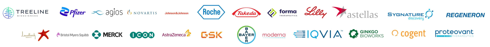

02 / SIGNALS NOTEBOOK · MATERIAL LINEAGE02 / 实验材料追溯设计
Material traceability for scientists 2 hours → 40 minutes为科学家设计 材料追溯图 2 小时 → 40 分钟
When an experiment turns unexpected, a scientist often holds only one material ID and three urgent questions: what was it derived from, which exact batch was used, and which experiments touched it? Piecing that chain together across scattered records used to take two hours. I connected materials, batches and experiments in an expandable map paired with a live audit table.实验一旦出现意外结果，科学家手里往往只剩一个材料编号，却急需查清三件事：它由什么衍生而来、用了哪一锅具体批次、进过哪几次实验？过去在十几份记录间来回跳转、靠脑子拼关系，一查就是两小时。我把分散的材料、批次与实验串成可逐层展开的谱系图，并配上一张同步联动的核验表。
一支抗体背后， 牵着一整串上下游记录Behind one antibody, a multi-hop chain of records
一支候选抗体往上追溯，连着质粒 DNA、宿主细胞系与培养液。真遇到实验结果波动或合规审查时，只知道“它叫什么名字”毫无帮助——科学家必须追清“它由谁衍生、抽了哪一管批次、进了哪轮实验”。Trace one antibody upstream and it connects to plasmid DNA, host cell lines and media. When assay results shift or an audit arrives, knowing a name is never enough—scientists must verify how it was derived, which specific lot was drawn, and which experiments used it.
01
材料Material
登记在册的“配方与身份”， 如某一株细胞系，回答“它是什么”。A registered biological identity, like a cell line—answering “what is it?”
02
批次Batch
同一材料分次制备的“具体哪一锅”， 纯度各自独立，回答“用的哪一管”。A specific lot prepared from that material, with its own purity—answering “which tube?”
03
谱系Lineage
把跨代材料、批次与实验连成网， 一眼看清谁生出了谁、流向了哪。The upstream and downstream links showing what was derived from what.
美国 · 产品经理UNITED STATES · PRODUCT MANAGERAdrian Papas
内部实验室 + 欧美药企客户Internal labs + US & European clients联合产品经理与人力团队招募一线科学家，完成远程访谈与走查Coordinated with PM and HR to interview and test with practicing scientists
Signals 的客户SIGNALS CUSTOMERS
服务全球头部药企的日常研发记录Trusted across global pharmaceutical R&D

辉瑞Pfizer
默沙东Merck
葛兰素史克GSK
罗氏Roche
诺华Novartis
阿斯利康AstraZeneca
拜耳Bayer
莫德纳Moderna
01 / THE INFORMATION ARCHITECTURE FLAW01 / 旧流程的断点
Experiments move forward. Investigations run in reverse.做实验是顺着记， 查问题却要倒着追
During bench work, recording flows forward: open an experiment table and register a derived child material directly from it. Months later, when debugging an unexpected result, the direction flips completely: a scientist holds only a material ID and must work backward to recover its parents, lots and prior assays.平时做实验记录时，动作是顺向的：打开实验材料表，直接沿用信息登记子代材料。可一旦几个月后复盘异常结果，方向彻底倒了过来：科学家手里只有一个材料编号，却要倒推它的亲代来源、分装批次和历史实验。顺着建档的目录，成了倒着破案的迷宫。
THE ENTRY-POINT SHIFT关键入口重构
手里只有材料编号， 破案就该从材料开始。When all you hold is a material ID, the investigation must start there.
我没有在系统外另造一个孤立的“图谱工具”，而是沿用科学家最熟悉的材料智能文件夹作为统一入口，在材料详情页里把“谱系（Lineage）”做成与属性、批次并列的原生页签——查清身份下一秒，就能原地展开上下游关系。Rather than inventing a standalone graph tool, I anchored entry in the familiar Materials Smart Folder and placed Lineage as a native peer tab beside Properties and Lots inside Material Details—turning identity lookup directly into relationship tracing.
最棘手的业务建模题THE DOMAIN MODELING CHALLENGE
材料同名，批次不同 实验结局可能截然相反Same material name, different batches, different fates
同一种材料会分次制备出多个批次，每一批又会流向不同的下游实验。如果图谱只按“材料名称”连线，两轮一成一败的实验在图上看起来会一模一样，根本揪不出问题出在哪一管。One material produces multiple batches, each feeding different downstream experiments. Connect material names alone, and a failed run looks identical to a successful one—hiding which exact lot caused the divergence.
01
先看黑色节点：“它是什么”Black nodes: what the material is
草图里的黑色节点代表材料本身。比如这株病毒载体由三种上游质粒共同衍生，光在材料层就已经是多源汇合，绝非单线家谱。Black nodes mark material identities. Here a viral vector merges three upstream plasmids—already a multi-parent network rather than a single chain.
02
再追黄色节点：“用的哪一批”Yellow nodes: which lot went where
黄色节点代表具体批次。同一材料的两个批次分别流向不同细胞系，往下又继续分批。只追到黑色节点，离锁定那次异常实验还差着十万八千里。Yellow nodes track specific batches. Two lots split into separate cell lines, then branch into further sub-lots. Stopping at material names misses the real trail.
我的交互解法MY INTERACTION RESOLUTION
同图编码指路， 联动表格查账One progressive map, paired with live record tables
拆成两张图会逼人在脑子里手动拼图，全量摊开又会乱成毛线团。我的方案是用清晰的节点色彩区分当前对象、材料与批次，支持按需逐支展开，并在图谱下方同步保留批次与关联表格，让寻路与对账各司其职。Splitting into two maps forces mental stitching; expanding everything at once creates a hairball. I unified assets and batches with distinct visual encoding and on-demand branch expansion, backed by synchronized detail tables below.
画出一张关系图很容易， 怎么不迷路、还能带走证据？Drawing nodes is easy. How do people stay oriented and verify?
调研没有停在“别人家的图长什么样”，而是拆解四个具体动作：分支深了怎么认路？选中节点怎么看属性？关系和明细怎么同屏配合？材料身份怎么挂住批次？Rather than comparing surface visuals, I broke precedents down into four task mechanics: staying oriented across deep branches, inspecting node details in context, pairing topology with row-level audit, and binding batches to entity IDs.
WormWeb
发育生物可视化Lineage visualization
用路径高亮锚定当前分支Anchor attention with a highlighted path
线虫细胞发育图谱是生物学家极熟悉的经典工具，醒目的高亮主干让视线在密集分叉里不会走丢。A classic developmental biology reference: highlighting the active lineage branch keeps researchers oriented even as trees fan out.
提炼问题：分支展开好几层后，怎样一眼认出起点？Key question: how do users spot their starting node once branches multiply?
点中节点，属性紧贴在侧Inspect node attributes without leaving the map
把下游分支图与选中样本的属性抽屉并置，免去了为了核对一个字段而频繁跳出图谱的折腾。Pairs downstream branches with an adjacent property pane so checking one attribute doesn’t tear the user away from the graph.
提炼问题：从看清关系到点进记录，能否一步接上？Key question: how smoothly can a node hand off to its underlying record?
左侧控制代数与过滤，下方同步列出祖先与后代明细表——图形探索与结构化核验在同一屏里互补。Generation controls sit on the left while structured ancestor and descendant tables anchor the bottom—serving visual discovery and row-level audit together.
提炼问题：图谱之外，核验任务还依赖哪些表格能力？Key question: what verification work still belongs in a structured table?
WormWeb、LabKey 与 IDBS 为项目立项阶段的原始参考；Benchling 为整理复盘时补充的同品类对照。WormWeb, LabKey and IDBS informed the original project discovery; Benchling was added during later category review.
收敛成我的设计准则DISTILLED INTO MY DESIGN
从熟悉的材料记录切入，用图谱追分支， 把逐条核验与数据导出稳稳留给联动表格。Enter from the material record. Trace paths on the map. Keep synchronized tables close for auditing and export.
02 / END-TO-END WORKFLOW02 / 四步破案路径
From a single ID to verified records拿着一个材料编号， 四步追清来龙去脉
01 / LOCATE01 / 锁定目标
Confirm the exact material identity first先在材料库里认准那支对象
Name, ID and material library stay visible together so investigations never start from a look-alike entity.名称、唯一编号与材料类型同屏并列，杜绝从同名近似物开始查错方向。
02 / 原地切入02 / SEAMLESS ENTRY
不跳出详情页，直接切进谱系页签Open Lineage right inside the existing record
属性、批次、容器与谱系并排置于同一材料详情下，无需切换心智模型。Properties, lots, containers and lineage live side by side inside one familiar material view.
03 / STAY ORIENTED03 / 展开不迷路
Keep the starting material unmistakable as branches fan out分支层层摊开，依然一眼认出起点
Distinct styling separates the current material from its six downstream lots so spatial orientation holds.当前材料与六个下游批次在视觉层级上清晰剥离，顺藤摸瓜也不会迷失坐标。
04 / AUDIT & EXPORT04 / 核验与带走
Cross-check row details and export evidence在下方表格逐行对账，一键导出证据
Linked child records and Export Lineage Data sit directly beneath the map—turning visual tracing into portable proof.关联子代记录与谱系数据导出紧贴图谱下方，把视觉寻路直接落地为可汇报的数据表。
亲自体验图表联动逻辑TRY THE INTERACTION MODEL
动手点开一条分支，看表格如何同步响应Expand a branch and watch the audit table follow
点击任意非起点节点，在弹出菜单中选择「展开 / 收起谱系」，观察下方亲代与子代表格如何随可见分支实时增减；点击「查看记录」可在新标签页打开对应材料或批次详情。Click any non-root node to Expand or Collapse Lineage and watch the Parents/Children table update in lockstep with visible branches; choose View Entity to inspect that record in a new tab.
真实交互复现 · 脱敏示例数据Interactive model · Example data
谱系图Lineage Map
当前材料Current材料Asset批次Batch/Lot
谱系表格Lineage Table
材料编号Material ID
材料类型Material Type
材料名称Material Name
材料／批次Asset/Batch
谱系关联Lineage
03 / DESIGN DECISIONS & TRADE-OFFS03 / 关键设计取舍
Why I refused to let the map replace the table图谱和表格， 为什么我坚持一个都不删
01
不造新入口，长在老习惯里Extend familiar navigation instead of siloing
材料智能文件夹管全局查找，详情页管单份档案。把谱系做成详情页里的原生页签，科学家零学习成本就能从“查身份”丝滑切入“追关系”。Materials Smart Folder handles discovery; Material Details holds the entity. Embedding Lineage as a native tab lets scientists pivot from identity check to tracing with zero relearning.
02
图展开到哪，表就跟到哪Lockstep sync between branches and rows
在 Miro 交互方案中，节点按需逐层展开，下方祖先与后代表格实时联动；悬停速览核心属性，菜单一键跳详情，碰到跨组无权限记录则明确给出受限提示——补齐这些异常状态，探索才不会断在半路。Branches expand on demand while ancestor and descendant tables update in lockstep; hover previews key fields, node menus open records, and restricted entries show explicit permission notices so investigations never hit silent dead ends.
03
图看拓扑去向，表做逐行对账Pay the dual-view cost for two distinct cognitive jobs
连线图擅长两秒看懂多源汇合与分叉，却不适合比对十几个字段和导出；表格正好反过来。同时维护双视图增加了前端工作量，但守住了“寻路 + 核验”的完整任务。而需要后端服务支撑的 PDF 与 API 导出，则与团队协商拆入二期，确保核心交互按期上线。Graphs reveal forks and multi-parent origins at a glance; tables handle dense field comparison and CSV export. Maintaining both views cost extra engineering effort, while server-rendered PDF and API exports were scoped into a follow-up phase to ship core tracing cleanly.
Lab scanning and mobile inventory context实验室扫码与移动端盘点现场Signals BioDesign product showcaseSignals BioDesign 产品发布现场
Later exploration · October 2026后续设计推演 · 2026 年 10 月＋
A separate October 2026 visual exploration revisiting information hierarchy and active-selection coupling between map and table—kept distinct from the shipped 2024 release.2026 年 10 月针对信息密度与图表选中态耦合所做的独立深入推演，与早期已上线版本分开归档，便于对照演进思路。
深挖一处微观交互决策ZOOMING IN ON ONE MICRO-DECISION
几十个专业字段， 难道每次对账都要 从头翻到尾？Dozens of domain fields— should configuring a table mean endless scrolling?
一条谱系链往往横跨多类生物材料：细胞系关心传代次数与生物安全等级，蛋白复合物关心重链轻链与总分子量，再加上通用审计字段，可选列轻松超过三十项。全塞进表格会撑爆横向滚动条，全摊成一列清单又让人翻到眼花。One lineage chain spans distinct biological libraries: Cell Lines track passage numbers and biosafety levels, Complexes track heavy/light chains and molecular weight, on top of common audit fields—easily 35+ columns. Showing all crushes the table; a flat checklist means endless scrolling.
我拆解出多套配置交互并在 Miro 中与产品经理 Adrian 逐一推演。最终我力推方案三：「先按材料类型收窄范围，再批量勾选移入」，并在迭代中补齐批量全选与字段排序，同时锁死必填的「材料编号」防止误删主键。After mapping multiple interaction options and debating edge cases with PM Adrian Papas in Miro, I championed Option 3: scope by material library first, then transfer fields individually or in bulk—locking mandatory Material ID while supporting column reordering.
核心取舍：保留跨材料全量字段的自由度， 用“分类过滤 + 批量穿梭”砍掉机械勾选。The trade-off: preserve full cross-library flexibility, while eliminating repetitive hunting and clicking.
已上线的真实交互复现SHIPPED INTERACTION IN PRODUCT
先按类型收窄，再决定把哪些列搬上桌面Scope by material type, then stage the columns that matter
点击右上角「Show/Hide Properties」打开配置弹窗，试着切换到 Complexes（复合物）并点击「全部添加」保存，体验多字段表格如何秒级重组。Click Show/Hide Properties, filter to Complexes, hit Add All and Save—watch how a cross-library audit table reconfigures in seconds.
真实逻辑复现 · 脱敏示例数据Source-informed demo · Example data
谱系表格Lineage Table
亲代Parents子代Children
按材料库（如细胞系、复合物）过滤，瞬间收窄可选列表Scope by material library (Cell Lines, Complexes) to cut list noise目标字段穿梭至右侧已选区，支持批量增删与列序调整Transfer fields into Selected individually or in bulk, with column ordering
把配置自由留给科学家 把机械勾选交给批量处理Keep full analytical choice Batch away the mechanical clicks
线上产品最终采用「Add All / Remove All（全部添加 / 全部移除）」承载当前过滤范围下的批量操作，并在全量视图下支持列序微调。In production, Add All and Remove All act on the active filter scope, while Move Up / Move Down reorders columns under All.
任务验证与上线反馈TASK VALIDATION & RELEASE OUTCOMES
追完一条完整材料谱系， 从 2 小时缩短到 40 分钟Tracing a full material lineage, cut from 2 hours to 40 minutes
由产品经理与人力团队协调公司内部实验室科研人员，并联合欧洲、美国药企客户完成远程访谈与真实追溯任务走查。省下的 80 分钟，原本全消耗在跨标签页翻找与人脑记账上（注：该指标专门衡量端到端材料谱系追溯任务耗时）。Coordinated with PM and HR across internal lab scientists and European/US pharma clients through remote interviews and task walkthroughs. Those 80 saved minutes previously vanished into tab-hopping and manual note-keeping (measured specifically on the end-to-end material-lineage tracing task).
模块净推荐值（NPS）提升 5 分Net Promoter Score rose by 5 points
由用户体验团队联合专职用研采集Measured by the UX team with a UX Researcher
面向 1,000 余名真实使用用户发放线上问卷，追踪新谱系模块上线两个月内的推荐意愿变化。Online survey across 1,000+ active users tracking recommendation willingness during the first two months live.
MY CONTRIBUTION & REFLECTION我的角色与复盘
What I owned—and the choice that mattered most五个月从零落地， 我最庆幸保住的那张表
在约五个月周期里，我与美国产品经理 Adrian Papas 及 10 位研发工程师并肩推进，独立负责材料追溯的信息架构重构、线框与高保真原型、科学家走查测试及最终界面落地。回头看，整个项目里最经得起时间检验的决定，是我顶住“只做炫酷关系图”的诱惑，把下方那张朴素的联动表格留了下来。图谱好看，两秒钟能看清分支走向；表格诚实，能一行行对准批号、筛选字段、导出成表。做科研工具，不能只讨好第一眼的惊艳，得陪科学家把证据查到底。Over roughly five months alongside US PM Adrian Papas and ten engineers, I owned the end-to-end IA shift, wireframes, interactive prototypes, scientist walkthroughs and shipped UI. Looking back, the decision that aged best was resisting the urge to ship “just a sleek node graph” and fighting to keep the plain, synchronized table right underneath it. Graphs look impressive in a pitch and reveal topology in seconds; tables are where scientists verify lot numbers, filter 30+ attributes and export audit proof. Good R&D design serves the whole investigation, not just the first glance.